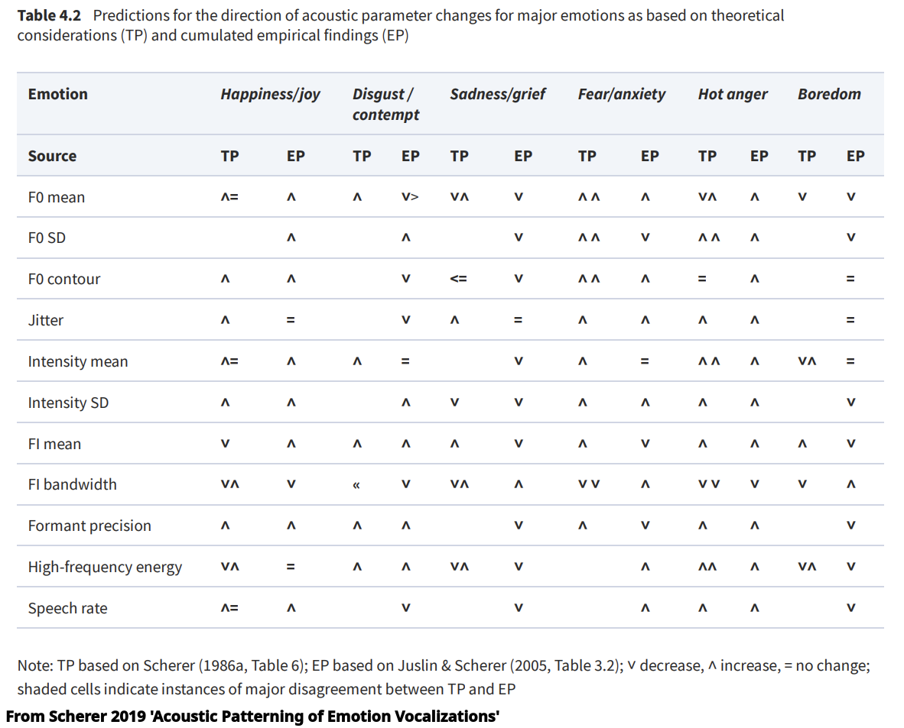
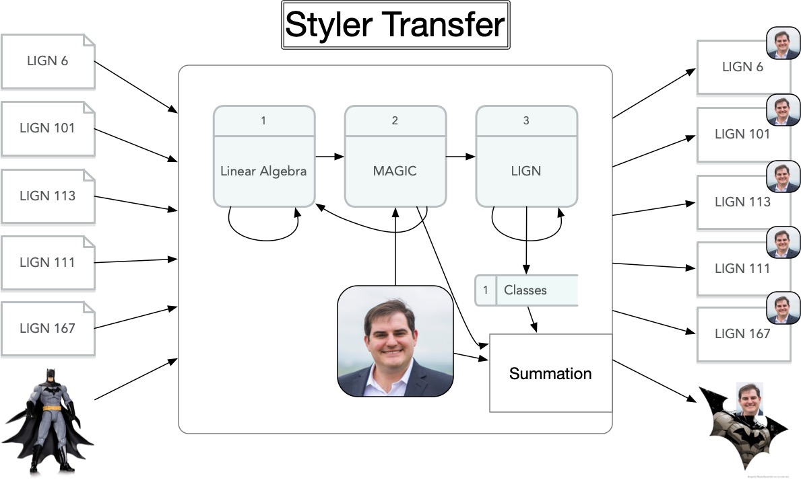

# TTS Voice Adaptation ### Will Styler - LIGN 168 --- ### Today's Plan - What do voices tell us? - Encoding Identity and Emotion - The Neural Elements of Style - How well does this work? - Remaining TTS Questions --- ## What is a voice? --- ### We've talked about why voices matter - Voices carry social information - Voices carry identity information - Voices carry linguistic information - Voices carry emotional information --- ### Voices carry social information - Information about gender presentation and sexuality - Information about racial identity (for better and [for worse](https://muse.jhu.edu/pub/24/article/900094/pdf)) - Information about our social identity, class, and background - Voices also indicate roles (e.g. newscaster, pilot, therapist voice) --- ### Voices carry identity information - Our voice helps to 'authenticate' to trusted friends and family - Consistency of voice helps us recognize humans - We can estimate things like age and height from voices - Some familiar voices bring comfort and ease --- ### Voices carry linguistic information - We can intuit a person's language background and other languages - We can guess a person's dialect(s) - We can use a voice to adapt our perceptions - "I think this person is Polish, so that was probably an /ɛ/ vowel" --- ### Voices carry emotional information - Voices can be 'angry' or 'sad' or 'calm' or 'quiet' - Tones of voice can affect somebody's emotional state - It is very possible to say the right thing incorrectly - 'I don't like your tone' - 'Calming' or 'soft' voices are a thing --- ## Encoding of Identity and Emotion --- ### Voice Identity has many factors - The story of determining voice identity isn't based on a few features - Current theories involve a high dimensional voice space and 'distance from the average speaker' - See [Schweinberger and Zäske 2019](https://doi.org/10.1093/oxfordhb/9780198743187.013.24) for details - The nature of this is a bit vague, but the key is that it's not 'just' any few features --- ### Social Elements of identity are tricky too - Our own Ben Lang has done work on our perception of Sexual Orientation, Gender Identity, and Gender Expression - *Lang, Benjamin (2023). Reconstructing the perception of gender identity, sexual orientation, and gender expression in American English. Proceedings of the 20th International Congress of the Phonetic Sciences.* - Turns out that people will tend to cluster people into social categories - Meaningful features include f0, formants, fricative moments, voicing type, and more - There's still not 'one simple cue' --- ### Emotion is similarly many dimensional  --- ### Emotion and Identity are noisy channels even for humans - There's some evidence that linguistic content, as well as seeing faces, affects human recognition ability - Cultural factors play a large role in emotion perception - As well as stereotypes (e.g. [the angry black woman](https://deepblue.lib.umich.edu/handle/2027.42/169661)) - Anger and fear are best recognized, but even still, it's complicated. - More details in [Scherer 2019 'Acoustic Patterning of Emotion Vocalizations'](https://academic.oup.com/edited-volume/38687/chapter/335929179) [(DOI)](https://doi.org/10.1093/oxfordhb/9780198743187.013.4) --- ### All of this is high-dimensional - This would be difficult to manually build a representation which captures voice or emotion well - Parameterization for 'angry' or 'Will Styler' is not straightforward - It sure is a shame that nobody's developed a sort of machine learning algorithm which is exceedingly good at learning high-dimensional embeddings from diverse data... --- ## The Neural Elements of Style --- ### We know that Modern Neural TTS can reliably carry identity and emotion - We can 'recognize' neural voices - 'Oh, that's the TikTok voice!' - We can detect emotion (or improper emotion, lack of emotion) in TTS speech - These carry social information - "I use the British Male voice for my Siri" - But how do we do this purposefully? --- ### Neural TTS can be trained using *any* voice - You can build a model from the ground up using any voice you'd like - [Except Scarlett Johansson](https://www.npr.org/2024/05/20/1252495087/openai-pulls-ai-voice-that-was-compared-to-scarlett-johansson-in-the-movie-her) - If all your training data are from a bored Bostonian, you'll end up with a bored Bostonian TTS voice - This is very expensive, though, and doesn't scale well at all - You also need *lots* of data from the new speaker --- ### You can also fine-tune existing models - Train on one voice, and then do more training on data only from a second voice - Generally with slight modifications to learning rate and targeted layers - This is not so different from training an ASR model on a few languages, and then giving it some (e.g.) Tira data to modify how it does the task. - This is easier than making a new model, and makes quite accurate voices - But still rather expensive - ... and requires expensive training to be done *long before the voice is used* --- ### If you want a near-perfect simulacrum, training and fine-tuning may be best - This allows you to fit *all elements of the model* to the voice in question - You'll train text analysis, prosody/duration modeling, phonemes, all to match that particular human - If you have the budget and the amount of data from the speaker needed, there's no reason not to just create a full model! --- ### These approaches are very *redundant* - If a model knows how to say 'penguin' already, why re-train just to have another person say it? - How much really differs prosodically across two dialects? - Why build a new model for text analysis differ if you just want somebody who sounds a bit different? - *Most of the learned task doesn't change, even when the voice does!* --- ### We can think of all speech as having 'content' and 'style' - Voices express linguistic 'content' - Phonemes, with ordering, and necessary tone/prosody for comprehension - This is 'all we need' to understand the utterances - 'Style' is everything else we've been talking about - 'Speaker' identity - Social components - Emotional content - Plus prosodic factors (e.g. speed, emphasis, prosodic 'tunes', sarcasm) --- ### Multi-Speaker TTS systems attempt to model content and style separately - This is often a dual-encoder architecture - One encoder creates a 'style embedding' - This captures speaker, emotion, prosody, and other details - The other encoder captures linguistic 'content' information - This helps us to go from text input to an output mel spectrogram - Both encoders' output is combined to help generate the output --- ### Here's Vanilla TacoTron2 <img class="r-stretch" src="phonmedia/tts_tacotron2.png"> --- ### Here's a Multi-Speaker Version <img class="r-stretch" src="phonmedia/tts_tacotron2_multispeaker.png"> --- ### These too show lots of variation - There are many ways to do multi-speaker TTS! - ... but this is a good, illustrative case! - Note that this is an example of the larger phenomenon of 'Neural Style Transfer' --- ### Multi-Speaker Inference - Conventional TTS just needs one input: Text - "Generate the waveform which best approximates this sentence" - Multi-Speaker TTS needs two inputs: Text, and a Style Embedding - "Generate the waveform which best approximates this sentence given this speaker" --- ### What does a style embedding look like? - *Previously, on LIGN 168!* --- ### Speaker Identification has often used i-vectors - Pull MFCCs - Look at the overall variability in speech based on the Universal Background Model (UBM) - Use Factor Analysis to identify the relevant elements of variability - Now generate an 'i-vector' which models the person in the greater variability approach --- ### x-vectors are a neural equivalent - Pull MFCCs for many, many speakers - Use a specialized Deep Neural Network to classify many speakers in a large training set - This is trained using contrastive loss, to optimally separate different speakers in the dataset - Now, find the speaker's individual embedding in that space by looking across frames in an audio sample - [Here are some nice references](https://arxiv.org/pdf/1910.10838) - This embedding is the 'x-vector', and has a bit more robustness and nuance - ... at cost of great computational complexity --- ### These embeddings are *designed to distinguish speakers* - Often times, specialized embedding methods are designed to *maximize contrast between desired categories* - Remember Wav2Vec2 building embeddings to contrast linguistic units? - By using speaker identification techniques, we're *building contrast between voices into the model directly* - ... and if it's well designed, we should get differences in voice, more than in language or words or context! --- ### Loss isn't straightforward here - Loss for TTS systems is generally comparison with the expected, training data mel spectrogram of the sentence - "How closely does the TTS output text+mel spectrogram match the ground-truth mel spectrogram?" - When you're taking a clip from a speaker and then making up *different* sentence, this doesn't make sense. - There's no existing sentence to compare the output against! --- ### Loss Strategies - Some systems validate the embedding directly - 'Given samples A B C, where A B are from one speaker and C is another, the computed embeddings for A and B should be closer than to C' - Some systems calculate the speaker embedding of the output, and compare to the input embedding - 'The output voice embedding should be cosine-similar to the input voice' - [Here's a nice example](https://arxiv.org/pdf/1802.06984) - [Here's another system](https://arxiv.org/pdf/1910.10838) --- ### Loss based on the embedding distance forces similar voices! - You are minimizing the distance between two embeddings which represent voice similarity as distance - When the embedding is similar, the output should be *identifiably similar* to the input embedding - *It doesn't matter what characteristics in the signal make a voice sound like it does, this approach should force the TTS to be similar to that!* --- ### Multi-Speaker TTS systems allow us to produce arbitrary texts with arbitrary style - Part of the network does the classical TTS task - Another part processes the embedding and injects it into the input stream - The output should approximate both the content and the style! --- ### Modern tools often build the style extractor right into the network - The encoder for style takes the audio as input, and outputs a fixed-length x-vector (or equivalent) - The input linguistic content doesn't matter, it just has to be enough frames to build a representative x-vector - Adding more data doesn't make the result better here! - This is unlike fine tuning - **This means that we don't need a lot of data to 'clone' a voice** --- ### Style is truly separate from content! - This is about voice, not language, so style transfer works across languages - The speaker is the same, it's just the content that changes - More on this in a minute! --- ### Emotional voices are a similar task! - Instead of passing in new speakers, pass in x-vectors corresponding to new emotional states - Give labeled states, and then apply those labels - You may want more granularity, but this is workable! --- ## How well does this work? --- ### Unreasonably well! - Modern tools are quite frighteningly good at this - The 'goodness' of the tool varies as a function of how close the voice is to Standardized English --- ### Neural Network Text-to-Speech Style Transfer Examples <audio controls src="comp/tts_squidward_ling.wav"></audio> <audio controls src="comp/tts_arnie_ling.wav"></audio> <audio controls src="comp/tts_snape_ling.wav"></audio> <audio controls src="comp/tts_clarkson_ling.wav"></audio> <audio controls src="comp/tts_gilbert_ling.wav"></audio> <audio controls src="comp/tts_optimus_ling.wav"></audio> <audio controls src="comp/tts_mario_ling.wav"></audio> --- ### Neural Styler Transfer  (Thanks to Winston Durand!) --- ### Neural Styler Transfer <audio controls src="comp/tts_will_ling.wav"></audio> (TacoTron2) <audio controls src="comp/tts_will_elclone.wav"></audio>(ElevenLabs) (Credit to Erick Amaro and Mia Khattar!) --- ### Multilingual Examples <audio controls src="comp/tts_will_english.mp3"></audio> (English) <audio controls src="comp/tts_will_french.mp3"></audio> (French) <audio controls src="comp/tts_will_spanish.mp3"></audio> (Spanish) <audio controls src="comp/tts_will_mandarin.mp3"></audio> (Mandarin) <audio controls src="comp/tts_will_italian.mp3"></audio> (Italian) <audio controls src="comp/tts_will_russian.mp3"></audio> (Russian) <audio controls src="comp/tts_will_japanese.mp3"></audio> (Japanese) --- ### Code Switching It's like sometimes mezclo un poco de español con my English, cuando me siento particularmente spicy, y tengo curiosidad to know cómo la TTS handles it. <audio controls src="comp/tts_will_codeswitch.mp3"></audio> --- ### This system isn't perfect > Adenocarcinoma in Tubovillious Adenoma bona fide certiorari de jure collusion RICO ex post facto CVN AWACS Escapement Tourbillion Remontoir de Egalite <audio controls src="comp/tts_will_jargon.mp3"></audio> --- ### Prosody is still hard <audio controls src="comp/tts_will_rick.mp3"></audio> --- ### Yet, these systems are concerningly good - Many of the classical issues in TTS aren't really issues anymore - We can do not just different voices, but specific voices - ... and we can work across languages very effectively - Wow. --- ### TTS technology has far outpaced my expectations - Where we are in 2024 vs. 2011 is wildly different - Deep Neural Networks have enabled possibilities that I couldn't have imagined - We have much to improve, but less than I'd thought! --- ## Lingering TTS Questions? --- ### Any remaining questions on TTS? --- ### Wrapping Up - Voices carry lots of information, socially and linguistically - Encoding identity and social elements is not remotely straightforward, and uses many, many features - Neural style transfer separates content from style, and allows us to reproduce the same content with a different approach - It works really, shockingly well --- ### Next time - We'll give you some time to work on your projects and collaborate with your colleagues! --- <huge>Thank you!</huge>